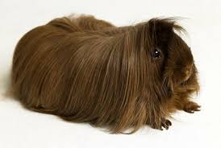
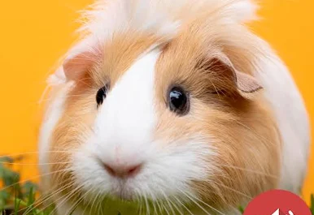

ზღვის გოჭი (ლათ. Cavia porcellus), გვინეური ზღვის გოჭი, ძუძუმწოვარი ცხოველი მღრღნელების რიგისა. მისი უკუდო სხეული 35 სმ აღწევს. უკანა თათზე 3 თითი აქვს, წინაზე - 4, ზურგი - მოყავისფრო-რუხია. ცხოვრობს პერუს მთისწინების ღია ადგილებში. ბინადრობს სოროებში პატარ-პატარა ჯგუფებად. წელიწადში 2-ჯერ შობს 1-4 ნაშიერს. ზღვის გოჭი (ან მისი ახლობელი სახეობა) სახორცედ მოაშინაურეს ინკებმა. ევროპაში შემოყვანილია XVI საუკუნეში. ზღვის გოჭს იყენებენ ბიოლოგიასა და მედიცინაში ფიზიოლოგიური, იმუნოლოგიური და სხვა ცდებისათვის. ტყვეობაში მრავლდება მთელი წლის განმავლობაში და შობს 6 ნაშიერს. ცუდად იტანს ტემპერატურის მკვეთრ ცვლილებას.
ზღვის გოჭი
ზღვის გოჭის ძირითადი საკვებია ხარისხიანი თივა, ისინი უნდა ვკვებოთ თივით ზამთრობითაც და ზაფხულობითაც. იმის გამო, რომ ზღვის გოჭს აქვს განსაკუთრებული საჭმლის მონელების სისტემა, ისინი ჭამენ საჭმელს ხშირ-ხშირად მაგრამ პატარა პორციებით. თივა უწყობს ხელს საჭმლის მონელების სისტემას და ის მას ულესავს კბილებს (კვება შეიძლება ასევე ხილით, სტაფილოთი, სალათით, ხორბლით, მწვანილით და სხვა).ზღვის გოჭებს უნდა ჰქონდეთ წყლის დალევის საშუალება (ეს საჭიროა, მაგრამ ზღვის გოჭები წყალს ასევე იღებენ ბოსტნეულიდან). ხანდახან შეიძლება მოგეჩვენოთ, რომ ის არც სვამს წყალს, მაგრამ ეს ასე არაა. წყალი უნდა გამოუცვალოთ ყოველდღე. ორსული ზღვის გოჭი ჭამს და სვამს მეტს.უხარისხო საკვები ზღვის გოჭებისთვის ძალიან მავნეა და შეიძლება სიკვდილიც კი გამოიწვიოს.
ზღვის გოჭი
ზღვის გოჭი - კარგი შინაური ცხოველი, დამჯერი და კეთილი. შეიძლება ზღვის გოჭის გაწვრთნა, რომ მის სახელის დაძახებაზე პასუხი გაგცეთ (ჭყვიტინით). გამოსცემენ სხვადასხვანაირ ხმებს მოფერებისას ან თუნდაც სხვა მოვლენის დროს. უყვართ ხელზე ჯდომა. მათთვის ძალიან საშიშია პატარა სიმაღლიდან ჩამოხტომაც კი. ზღვის გოჭის საცხოვრებელი (მაგალითად აკვარიუმი, და რა თქმა უნდა წყლის გარეშე!) უნდა გამოსუფთავდეს 1-2 ჯერ კვირაში.ზღვის გოჭები საშუალოდ ცოცხლობენ 7-8 წელი, ზოგჯერ კი 15 წელიც კი.